Einführung
Willkommen auf der Projektseite des Informatikunterrichtes 15/16 an der Stormarnschule Ahrensburg.
Diese Webseite wurde zu Dokumentationszwecken für nachfolgende Informatiklehrer und -schüler erstellt, um einen einfachen Einstieg in das Thema zu bieten. Bis Sommer 2016 wird diese Webseite erweitert und verbessert, wer sich danach darum kümmert steht nicht fest.
Aktuell werden Inhalte von Fabian Pieper und Jesse Stricker erstellt, welche auf der Arbeit mit dem Raspberry Pi im Unterricht basieren.
Auf dieser Seite finden sich alle Tutorials und Anleitungen, die im Unterricht entstanden sind.
Für Einsteiger
Schüler, die den Raspberry Pi zum ersten Mal verwenden, sollten dieser Dokumenatation von Anfang bis Ende folgen, um einen möglichst einfachen Einstieg in das Thema zu bekommen.
Es wird sich zu erst mit dem Einrichten des Raspberry Pi beschäftigt, bevor es
mit Texten zu den Grundlagen weiter geht.
Wenn dann ein gewisses Grundverständnis vorhanden ist, können die Tutorials
bearbeitet werden.
Für Fortgeschrittene
Wer in dem Umgang mit dem Raspberry Pi schon geübter ist, kann sich direkt an die Tutorials setzen. In dem Fall ist ein Grundwissen von C++ benötigt.
Für zur Dokumentation Beitragende
Für Euch findet sich unter dem Appendix Meta eine Zusammenfassung, wie diese Dokumentation ensteht und welche Werkzeuge dafür verwendet werden.
Bitte lest sie euch vorher durch, damit der Stil der Dokumentation möglichst konstant bleibt. Danke.
SSH-Verbindung
Das Herstellen einer SSH-Verbindung zum Rasperry Pi ist sehr nützlich zum Ausführen von Befehlen. Man kann sich dann das anschließen von Monitor und Tastatur an den Pi sparen und vom eigenem Laptop oder Schulrecher aus den Pi steuern.
Je nach Betriebsystem ist das Verbinden zum Pi unterschiedlich. Dise Anleitung gilt für Linux, OSX und Windows.
Verbindung aufbauen
Linux, OSX
OSX basiert auf Linux und da Linux einen SSH-Klienten mitbringt, gelten diese Schritte auch für OSX.
-
Öffne das Terminal
-
Führe folgenden Befehl aus:
ssh pi@<ip><ip> ist durch die IP-Addresse oder den Hostnamen des Raspberry Pis zu ersetzten.
-
Du bist nun auf dem Raspberry Pi und die Befehle, die du schreibt, werden direkt auf dem Pi ausgeführt
-
Um zu Beenden, schließe entweder einfach das Terminal oder sende
exitan den Pi, um zum Terminal deines PCs zurückzukehren
Windows
Anders als vorher hat Windows keinen eigenen SSH-Klienten, deshalb müssen wir uns einen herunterladen und installieren.
- Lade Putty herunter und ziehen es an einen geeigneten Ort, z.B. den Desktop
- Starte Putty
- Gib in das Feld
Host Name (or IP Address)folgendes ein:pi@<ip>.
<ip> ist durch die IP-Addresse oder den Hostnamen des Raspberry Pis zu ersetzten - Drücke Enter oder klicke auf Open unten rechts
- Du bist nun auf dem Raspberry Pi und die Befehle, die du schreibt, werden direkt auf dem Pi ausgeführt
- Zum Beenden kannst du einfach das Putty-Fenster schließen
Installation
Bei einem neuem Raspberry Pi ist kein Speicher dabei, es muss also eine SD-Karte mit einem Betriebssystem bespielt werden, von dem der Raspberry Pi aus läuft.
Wie das erledigt wird, und wie das Betriebssystem eingerichtet wird, seht ihr auf den nächsten Seiten.
Betriebssystem
Zum Installieren werden ein paar Dinge benötigt, die vorher behandelt werden sollten:
- SD-Karte, 4 GB oder mehr
- Win32 Disk Imager
- Raspberry Pi
- Computer mit SD-Kartenleser
Das Betriebsystem des Raspberry Pis ist eine angepasste Linux-Distribution, die von dem populärem Debian abstammt, daher auch der Name "Raspbian". Wir nutzen "Raspbian Lite", eine minimale Version ohne Desktopoberfläche, nur mit Eingabeaufforderung.
Download
Als erstes muss das Datenträgerabbild von der Raspberry Pi Webseite heruntergeladen werden. Ihr findet es auf der Downloadseite. Am Besten ladet ihr immer das Aktuellste herunter, wenn ihr einen Pi neu aufsetzt, dieses seht ihr auf der linken Seite: Direktlink
Nach dem ihr die ZIP-Datei heruntergeladen habt, müsst ihr diese entpacken: Ihr erhaltet eine .IMG Datei, das Datenträgerabbild.
SD-Karte formatieren
Für das Kopieren des Images (Datenträgerabbildes) ist ein Programm wie Win32 Disk Imager benötigt, welches den Inhalt auf die SD-Karte schreibt.
Startet das Programm nach Download & Entpacken mit Administratorrechten. Dies ist wichtig, da das Schreiben sonst unter Umständen nicht funktioniert!
- Rechtsklick auf "Win32DiskImager.exe"
- Klick auf "Als Administrator ausführen"
Wenn Win32 Disk Imager läuft:
- Klick auf den kleinen, blauen Ordner rechts
- Image (.IMG Datei) auswählen und bestätigen
- Rechts unter "Device" die SD-Karte auswählen, den Laufwerkbuchstaben findet unter Windows-Explorer heraus
- Klick auf "Write"
- Klick auf "Yes"
Wartet nun, bis der Schreibvorgang fertig abgeschlossen wurde.
Einrichtung auf dem Pi
Steckt die SD-Karte, ein Netzwerkkabel und das Stromkabel in euren Pi und bootet. Hat Alles funktioniert, könnt ihr nach ein paar Sekunden euch über SSH mit eurem Raspberry Pi verbinden. Wie das geht, steht hier: SSH-Verbindung.
Benutzer: pi
Passwort: raspberry
Zu Erst werden einige grundlegende Einstellungen vorgenommen und Programme installiert.
All dies wird als Root-Benutzer ausgeführt:
sudo -i
Update der Software auf dem Pi (kann eine Weile dauern):
apt-get update -y && apt-get upgrade -y
apt-get install -y git
Konfigurieren mit "raspi-config":
raspi-config
Ihr navigiert mit den Pfeiltasten und bestätigt mit der Entertaste. Mit Escape kommt ihr ein Menü zurück.
- Wähle "1 Expand Filesystem"
- Bestätige mit OK
- Wähle "3 Boot Options"
- Wähle "B2 Console Autologin"
Der Pi startet dann in der Konsole und ihr seit bereits eingeloggt
- Wähle "8 Advanced Options"
- Wähle "A6 SPI"
- Wähle "Yes"
SPI ist aktiviert, das ist eine Schnittstelle die z.B. für das LCD Tutorial benötigt wird - Bestätige mit OK
- Wähle "Yes"
SPI ist nun auch beim nächsten Neustart aktiv - Bestätige mit OK
- Wähle "Finish" oder Drücke die Escape-Taste um zu Beenden
Startet nun den Raspberry Pi neu!
Software
C++ Bibliotheken
Nun wollen wir die benötigten C++ Bibliotheken installiern, die zum Zugreifen auf die GPIO-Schnittstelle benötigt werden.
BCM2835
Diese Bibliothek ist die Grundlage für alle weiteren GPIO Bibliotheken. Um sie zu installieren, führt ihr folgendes in der Konsole aus.
# Ordner erstellen
cd ~
mkdir libs
cd libs
# Download und Entpacken
wget http://www.airspayce.com/mikem/bcm2835/bcm2835-1.46.tar.gz
tar xzvf bcm2835-1.46.tar.gz
cd bcm2835-1.46
# Konfigurieren, Kompilieren, Installieren
./configure
make
sudo make check
sudo make install
GPIO
Mit dieser Bibliothek wird das verwenden von Pins erheblich erleichtert, deswegen sollte sie installiert werden:
cd ~/libs
# Download
git clone https://github.com/stormarnschule/gpio.git
cd gpio
# Kompiliern und Installieren
make
sudo make install
Grundlagen
Hier werden dir alle grundsätzlichen Dinge zur allen Bauteilen erläutert, die wir hier verwenden.
Wer sich bereits gut genug über den Raspberry Pi, die Pins und das Gertboard informiert fühlt, kann direkt zu den Tutorials springen.
Raspberry Pi
Hardware
Je nach Version des Raspberry Pi unterscheidet sich seine Hardware. Da ihr aber warscheinlich mit der 2. Generation Model B arbeiten werdet, hier ein paar Eckdaten dazu:
- 900 MHz 4 Kern ARM Prozessor (32 bit)
- 1024 MB Arbeitsspeicher
- microSD-Kartenleser als Festplatte
- 4 USB 2.0 Anschlüsse
- 40 Pins, davon 26 GPIO
- 5 V Micro-USB Netzteil
Software
Als Software kann jedes Betriebssystem verwendet werden, welches auf ARM Prozessorn läuft.
Am häufigsten wird Raspbian benutzt, ein Debian-Linux, aber grundsätzlich kann jedes Linux verwendet werden,
Raspbian bietet jedoch die beste Unterstützung.
Neben Linux kann auch Android installiert werden, allerdings ist dies noch in der Testphase.
Auch neurere Versionen von Windows 10 sind ab RPi 2 Model B kompatibel.
Wir empfehlen auf jeden Fall Raspbian, da dieses Betriebssystem offiziell unterstützt und von den Raspberry Pi Machern stetigt weiterentwickelt und verbessert wird.
GPIO
Gertboard
Tutorials
Die Tutorials auf den nächsten Seiten werden wie erwähnt in C++ geschrieben.
Um euren Code ausführen zu können, muss er zuerst kompiliert werden, bevor die
Binärdatei gestartet werden kann. Auch die Bibliotheken GPIO und ggf. auch
PCD8544 werden eingebunden.
Hierfür könnt ihr unser Script benutzen, dass ihr von GitHub herunterladen könnt.
wget https://raw.githubusercontent.com/stormarnschule/pi-setup/master/run
chmod +x ./run
Das Script führt ihr wie folgt aus:
./run <cppfile> [OPTIONS]
# cppfile: Pfad zur .cpp-Datei, die ausgeführt werden soll
#
# OPTIONS:
# -f Immer kompilieren, auch wenn Binärdatei vorhanden (im Normalfall nicht nötig)
Einfach
LED
Setup
In diesem Tutorial geht es um eine LED, die mittels des Raspberry Pi's angesteuert und zum blinken gebracht werden soll. Um dies physikalisch zu ermöglichen, muss zunächst eine Verbindung des Pi's mit der LED geschlossen werden. Hierfür benutzen wird ein Schaltboard, auf das die Led gesteckt wird. Der Pi wird nun so mit zwei Kabeln über zwei GPIO-Pins mit dem Schaltboard verbunden, dass ein Stromkreis gebildet wird. Zudem benötigen wir einen in Reihe geschalteten Widerstand, um die Stromstärke zu senken.
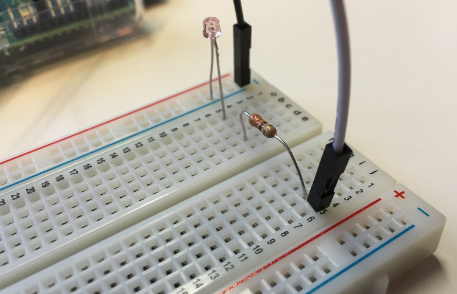
Setup-Check
Wenn ihr euer Schaltboard mit den aufgezählten Elementen versehen habt, könnt ihr euer Setup testen, indem ihr die Kabel die nun vom Schaltboard ausgehen mit dem Dauerstrompin(3,3v, Pin 1) des Pi's und der Erdung(Pin 25) verbindet (siehe Grafik). Achtet darauf, dass eine LED-Diode nur bei einer Stromrichtung den Stromkreislauf schließt. Kommt es daraufhin zu einem Dauerleuchten euer LED, wisst ihr, dass alle Komponenten intakt sind.
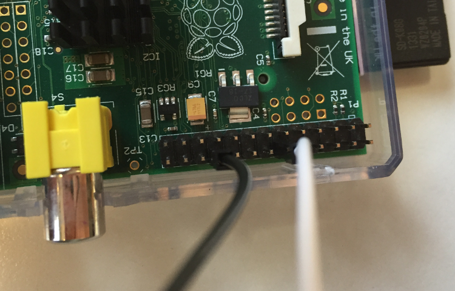
Das Programm
Nun soll die Led vom Raspberry aus gesteuert werden und nicht durchleuchten, sondern Phasenweise für jeweils 0,5s an und aus sein. Um dies überhaupt zu ermöglichen, muss noch eine kleine Änderung an eurer Hardware vorgenommen werden. Die Verbindung am Dauerstrompin muss aufgelöst werden und das Kabel muss mit an einen der GPIO-Pins verbunden werden. Wir nutzen für dieses Programm den GPIO Pin 15 (siehe Grafik). Diesen Pin könnt ihr mit dem Raspberry Pi ansteuern und an- bzw. ausschalten, also eine Spannung anlegen oder nicht anlegen. Schreibt nun ein Programm, welches die LED 10 mal für 0,5s leuchten lässt.
Tipps
- Die Gpio-Klasse erleichtert das Arbeiten mit den Pins erheblich. Erfindet also das Rad nicht neu und importiert diese zu Anfang
#include "gpio.h". Es ist jetzt möglich Input- und Output-Pins allein mit der Übergabe der Pinnummer zu definieren.
Ihr braucht außerdem eine Hauptmethodeint main(). Diese wird bei Programmstart ausgeführt. In ihr könnt Ihr euer Programm implementieren. - Zuerst muss der Pin 15 als Output-Pin definiert werden. Erzeugt also ein Pin-Objekt über die
output_pinMethode in der Gpio-Klasse. - Das zehnfache aufleuchten könnt ihr mir einer
for-Schleife umsetzen. - Den Pin-Status kann mit der Methode
set_state(bool)verändert werden. - Mit der Methode
delay()wird das Programm für die Zeitdauer der übergebenden Zahl in ms pausiert.
Taster
Setup
Bei diesem Tutorial soll eine LED über einen Button angeschaltet werden. Auf Knopfdruck, soll diese so zum Aufleuchten gebracht werden. Wird der Taster wieder losgelassen soll die LED erlöschen. Hierfür wird wie beim Simple-LED Tutorial ein Schaltboard benötigt. Auf diesem werden zwei Stromkreise installiert. Der eine soll die LED mitsamt Widerstand enthalten. Der andere Stromkreis enthält den Button. (Die Funktionsweise lässt sich auch mit einem Stromkreis ohne Programm umsetzen, erfüllt jedoch nicht die Vorraussetzungen, welche für die nächsten Tutorials benötigt werden.) Beide Stromkreise werden jeweils einem GPIO-Pin zugeordnet und mit dem Grund verbunden (In der Lösung wurden der Pin 14 für den Button und Pin 15 für die LED genutzt).
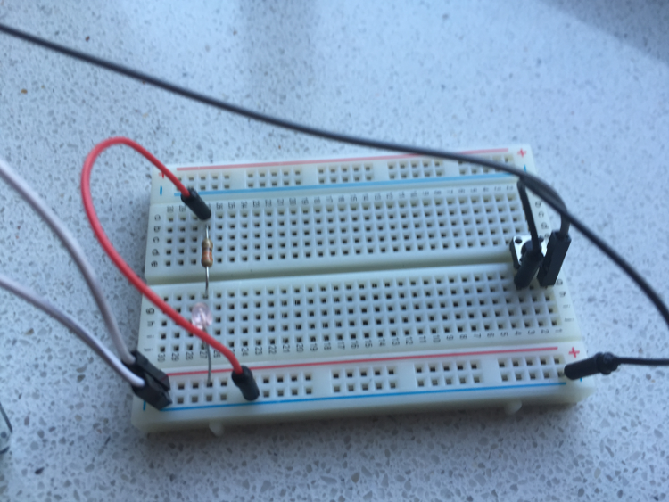 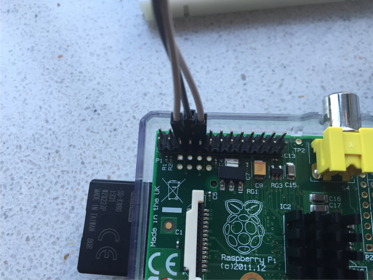
Das Programm
Euer Programm soll über den Button Pin den Status des Knopfdruckes abfragen und je nach diesem die LED über den LED-Pin aufleuchten bzw. nicht aufleuchten lassen.
Tipps
1.
Über while-Schleifen kann dauerhaft die Status des Buttons geprüft werden. Zum Abfragen könnt ihr die Methode state() nutzen.
Gertboard
Lichtorgel
Setup
Nun zum ersten Tutorial mit dem Gertboard. Deine Aufgabe ist es nun die eingebaute LED-Reihe in eine Lichtorgel zu verwandeln. Da bei der Lichtorgel alle LEDs angesteuert werden sollen und diese eine Ausgabe des Pi bzw. des Gertbords ist, müssen alle Buffer auf dem Gertboard ebenfalls als output gesetzt sein. Dies betrifft als output Buffer B1 – B12 (siehe Gertboardgrafik).
Habt ihr die Buffer richtig definiert, kann erstmal gar nichts passieren. Es
gibt keine leitende Verbindung zwischen dem funktionellem Block der Buffer und
dem Pi. Diese Verbindung muss nun geschaffen werden. Hierzu müssen die GP Pins
mit den Buffer Pins verbunden werden.
Um die LED wie gewünscht ansteuern zu können sind die GP25–GP17 mit den Buffern
B1-B7 zu verbinden und GP11-GP7 mit B8-B12. GP15 und GP 14 werden ausgelassen,
da diese eine andere Funktion abdecken, die zu diesem Zeitpunkt nicht benötigt
wird. Nach dem verkabeln des Gertboards sollte dieses aussehen wie auf der
Grafik und den Bildern unten auf der Seite.
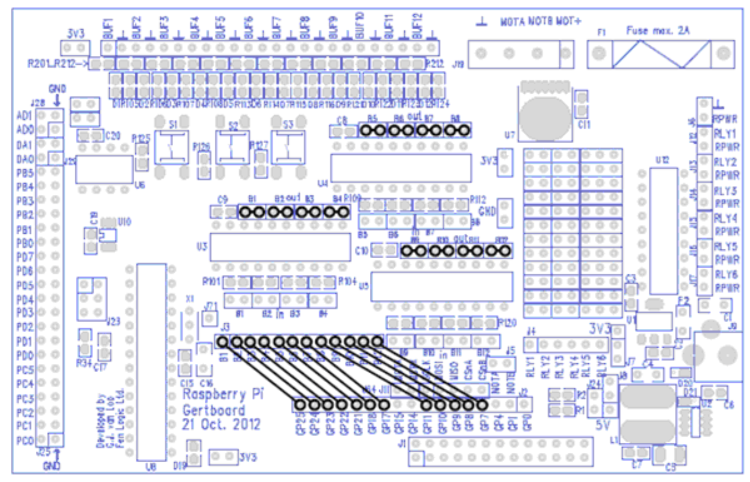 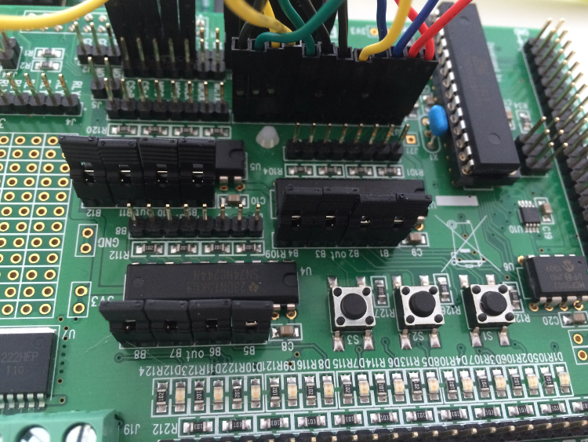 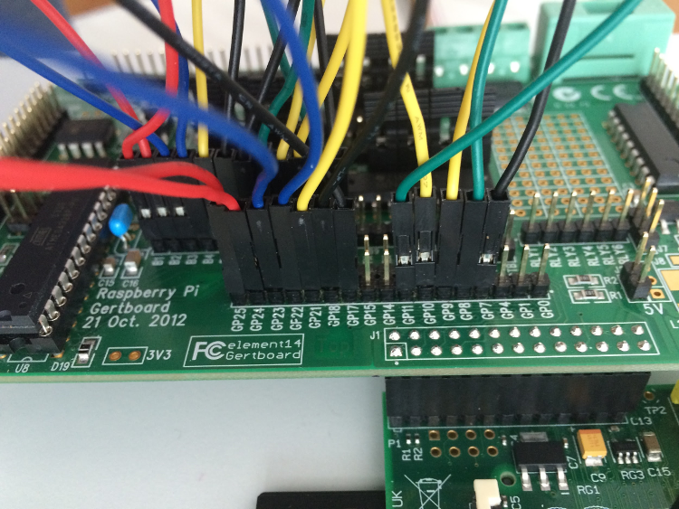
Das Programm
Nun haben wir bereits die “Hardware”-Vorraussetzungen für unsere Lichtorgel geschaffen. Wichtig ist, dass ihr die GPIO-Steuerung in euer Programm einbindet:
#include <gpio.h>
Kommen wir nun zum Code, der die Lichtorgel antreibt. Wichtig ist, dass die API, also die Schnittstelle eingebunden ist, die den Zugriff auf die GPIO Pins ermöglicht. Diese hält Methoden bereit, die ihr nun nutzen könnt um die LEDs auf dem Board an und aus zu schalten.
Euer Programm soll die LEDs auf dem Gerdboard der Reihe nach aufleuchten lassen. Nachdem eine Richtung komplett durchlaufen wurde, soll dies erneut in die andere Richtung geschehen. So entsteht eine nicht aufhörende Kette von aufleutenden Lampen.
Tipps
- Zuerst muss eine Liste von GPIO Pins erstellt werden. Diese sollte alle Pins enthalten die in Verbindung mit den LEDs stehen und diese als
output_pindeklarieren. - Um das aufleuchten der Lampen zu einer Lichtorgel zu verbinden benötigt ihr 3 Schleifen. Davon dient zwei nur zum Aufleuchten einer Reihe in jeweils verschiedene Richtungen. Die dritte dient dazu, dass dieser Vorgang wieder von vorne beginnt.
- Funktionen die genutzt werden sollten sind:
vector::begin(),vector::end(),pin::state(),delay(). - Mit der Funktion
state()kann sowohl ein Wert abgefragt, mit derset_state(bool)übergegen werden.
Taster
Setup
Da in diesem Turorial zum ersten Mal die Taster auf dem Gertboard eingebunden
werden sollen und diese eine Eingabe darstellen werden, muss die Verkabelung
der Pins erneut verändert werden.
Auf die Output Pins B1-B3 müssen Jumper gesetzt werden. Dies ermöglicht eine
Ausgabe des Gertboardboard ausgelöst durch die Taster. Außerdem müssen die GPIO
Pins 25 mit B1, 24 mit B2 und 23 mit B1 verbunden werden.
Dies sieht dann ungefähr so aus:
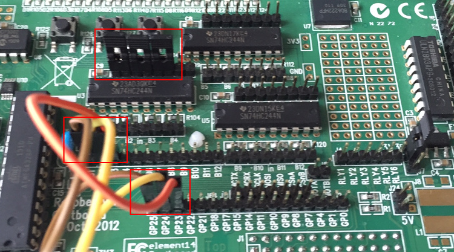
Das Programm
Euer Programm soll nun den Status der Buttons anzeigen. Hierbei sollt ihr alle drei Buttons einbinden und eine Ausgabe formulieren, über die dem Nutzer mitgeteilt wird, ob ein Button gedrückt ist oder nicht.
Tipps
- Es muss eine Liste der Pins angelegt werden, über die die Buttons
angesteuert werden, bzw. über die deren Signal geleitet wird. Diese soll
gleichzeitig die Pins als
button_pindeklarieren. Ihr erstellt also eine Liste von denbutton_pins. Mit dieser Liste könnt ihr dann im folgenden arbeiten. - Die Liste muss durchgegangen werden und von jedem Pin soll der Status ermittelt werden. Diesen könnt ihr in einer Variablen speichern und ausgeben lassen.
- Um immer den aktuellen Status eines Buttons ermitteln, müssen sich eure
Statusabfragen und Ausgaben in einer
while-Schleife befinden. - Der Übersichtlichkeit halber solltet ihr die ausgegebene Zeile zu Beginn der
Schleife wieder löschen. Nutzt dafür
std::cout << "\r";.
Lichtorgel + Taster
LCD
Spiel: Snake
Setup
Um ein Spiel über euren Raspberry Pi umzusetzen benötigt ihr nicht nur die Verbindung eines Displays zum Pi (LCD Display), sondern auch eine Verbindung zu Eingabegeräten, in diesem Fall Buttons, die auf einem Schaltboard angebracht werden. Von den Buttons aus muss eine Verbindung zu jeweils einem Gpio Pin geschlossen werden, über den dann der Status später abgefragt werden soll (viele Möglichkeiten des Anschlusses gilt es nicht, da die meisten Pins bereits durch das LCD Display belegt sind, in unserem Beispiel für das Programm wurden die Pins 24 und 25 benutzt). Um den Button auch tatsächlich in einen Stromkreislauf einzubauen, muss ein Kabel vom Grund zum Button und ein weiteres vom Button weg zu dem gewünschten Gpio-Pin laufen, sodass dieser mit einem Tastendruck den Kreislauf schließt und ein Potentialunterschied erfasst werden kann.
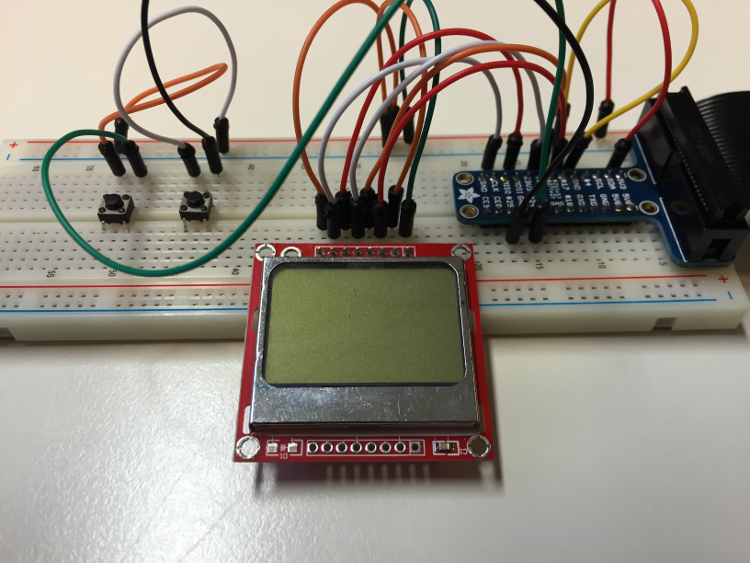 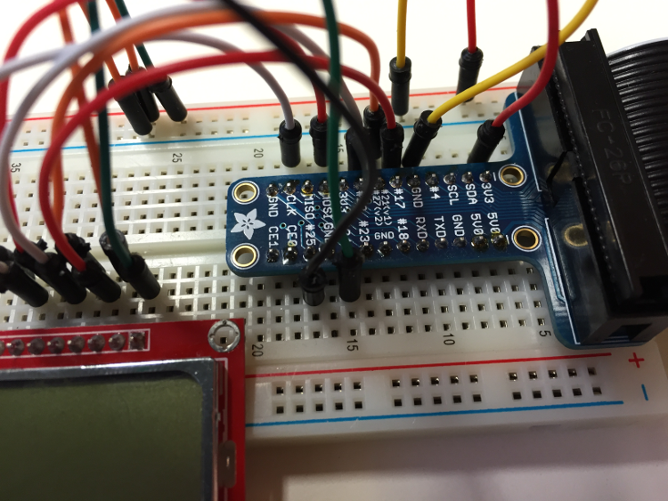 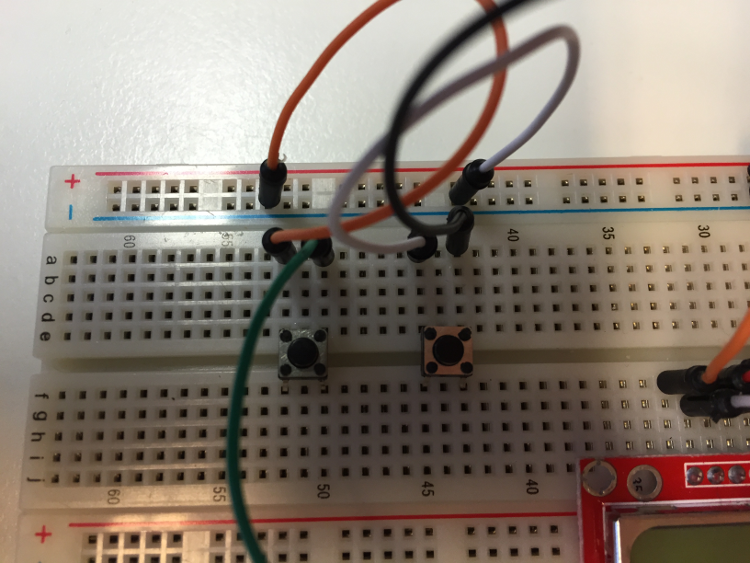
Das Programm
Es soll ein Standart Snake Spiel, wie es früher auf Mobiltelefonen lief, über den Pi realisiert werden. Folgende Eigenschaften und Elemente sollen enthalten sein:
- Eine Schlange mit einer bestimmten Anfangsgröße, die mittels zweier Buttons vom Spieler gesteuert werden kann und sich mit konstanter Geschwindikeit vorwärts bewegt
- Richtungsänderungen geschehen immer im 90°-Winkel. Gleichmäßige Bewegungen sind nicht möglich
- Zufällig erscheinendes Futter, welches die Schlange vergrößert, wenn sie es frisst (über den Punkt läuft)
- Abbruch des Spiel, wenn die Schlange gegen sich selbst läuft
- Ein grafisch festgehaltenes Spielfeld mit einer Anzeige für den Score
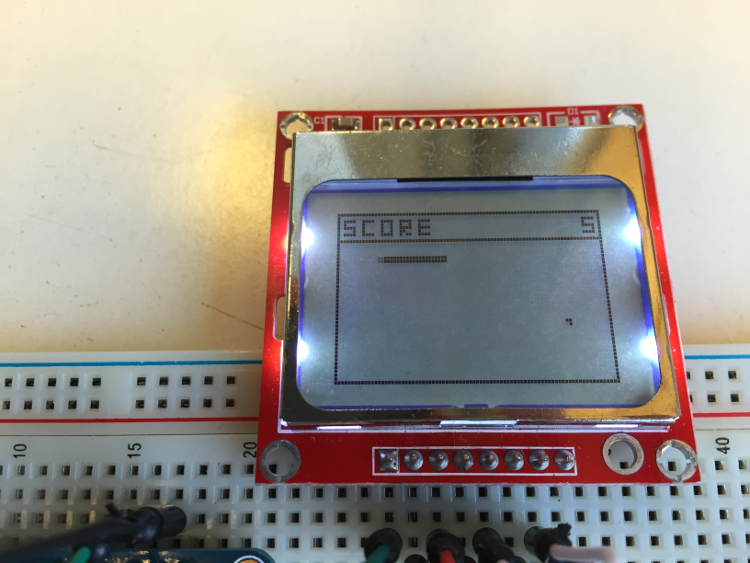
Tipps
1.
Geht in logischen Schritten an das Projekt heran. Überlegt, wie in der OOP, welche Eigenschaften die Snake eigentlich haben soll (obwohl ihr nicht zwangsweise eine eigene Klasse für diese anlegen müsst). Legt darauf basiert Methoden fest, die diese Eigenschaften definieren. Des weiteren könnt ihr das gesamte Programm in Methoden aufteilen, die den Spielablauf wiederspiegeln. Methoden könnten sein:
init()odergameStart()- deklariert die Startbedingungenmove()- beschreibt das Bewegen der Snakeinput()- setzt die Eingaben umdraw_header()- beschreibt das Spielfeldrender()- aktualisiert das Spiel auf dem Display
2.
Wenn ihr möglich frühzeitig eure Programmabschnitte testen wollt gibt es dafür 2 Möglichkeiten:
- Ihr baut Konsolenausgaben in die Bereich ein, über die ihr euch nicht sicher seit, ob und in welcher Reihenfolge die ausgeführt werden.
- Beschreibt erstmal das grafische Spielfeld (geht dabei vor wie im LCD_Tutorial). Außerdem müsst ihr dann noch eine Render()-Methode definiert, die in regelmäßigen Abständen euren derzeitigen Spielstatus graphisch darstellt. Auf diese Weise könnt ihr nach jeder Programmerweiterung Fortschritte auch Bildlich erkennen. Gleichzeitig vermeidet diese Vorgehensweise ein umfangreichen, langes Debuggen zu späteren Entwicklungsstati.
3.
Ignoriert zunächst, dass ihr etwas grafisches programmiert. Beschreibt das Verhalten der Schlange anhand von Koordinaten, die ihr als Punkt in einem X- und einem Y-Wert (Startpunkt + konstante Änderung der Koordinaten für eine gleichförmige Bewegung). Beschreibt erstmal eine gradlinige Bewegung und kümmert euch erst später um Inputs. Dies setzt voraus, dass die Schlange nach dem passieren des rechten Bildschirmrandes wieder links eintritt. Das Einzige, was euch nun noch von einer graphischen Umsetzung trennt, ist die Eindung der Schlangenposition in die render() Methode.
4.
In vielen Bereichen müssen Zwischenstände, sowie Zustände festgehalten werden. Überlegt euch hierfür sinnvolle Variablen.
Erweiterungen
Wenn ihr das Snake Spiel erfolgreich umgesetzt habt, könnt ihr euch Erweiterungen für dieses Überlegen, welche das Spiel unter Umständen interessanter gestalten könnten. Als Beispiel-Code liegen 2 weitere Versionen des Spiels vor. Jeweils wurde das Setup um zwei Buttons ergänzt. Beim einen werden diese für eine abweichende Steuerung der Snake genutzt, die andere Variante ermöglicht durch diese die Steuerung einer weiteren Snake für ein Zweispielerduell.
Meta
Hier möchte ich kurz erläutern, wie diese Dokumentation erstellt wird, damit nachfolgende Schüler oder Lehrer sie erweitern können, bei Bedarf.
Aufbau
Diese Webseite besteht aus HTML, CSS und JavaScript Dateien, die alle auf einem Server für alle zugäglich liegen.
Anstatt diese Dokumentation direkt in HTML zu schreiben, verwenden wir einen Werkzeug, was häufig zum Schreiben von statischen Webseiten oder Blogs benutzt wird: Markdown. Markdown ist eine, einfachem Text sehr ähnliche Sprache, in der man formatierten Text schnell und gut lesbar scheiben kann.
Kompilieren
Da allerdings der Webbrowser Markdown - anders als HTML - nicht rendern kann, wird es vorher von einem Programm in HTML übersetzt, "kompiliert".
Wir benutzen hierfür mdBook. Es ist sehr einfach in der Verwendung und, im Vergleich zu Ähnlichem, sehr schnell.
Hosting
Der Markdown-Code für dieses Buch findet ihr in unserem GitHub-Repo.
Bei jedem Commit, also immer dann, wenn wir etwas geändert haben, wird der Code
automatisch nach HTML kompiliert. Die erstellte Webseite befindet sich
im gh-pages
Zweig vom selben Repo.
Hierfür gebrauchen wir die WebApp wercker.com.
Wenn man nun im Browser auf die Webseite stormarnschule.github.io/raspi-book geht, sendet GitHub eben jenen HTML-Code, der im gh-pages Zweig liegt an den WebBrowser.
Bilder
Die Bilder sind alle im PNG Format, dies bietet die beste Qualität bei kleiner Dateigröße. Im Gegensatz zu JPG sieht man keine Pixelfehler oder "Krisel".
Alle Bilder wurden auf eine Breite von 750 px skaliert, so passen sie genau
auf eine Seite, ohne vom Browser verkleinert werden zu müssen. Außerdem benutzen
einige Bilder Adam7, ein Algorithmus der
während es Herunterladens das Bild verfeinert.
Die Verwendung von Adam7 ist von uns empfohlen!